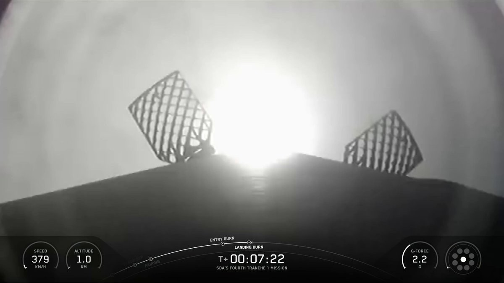
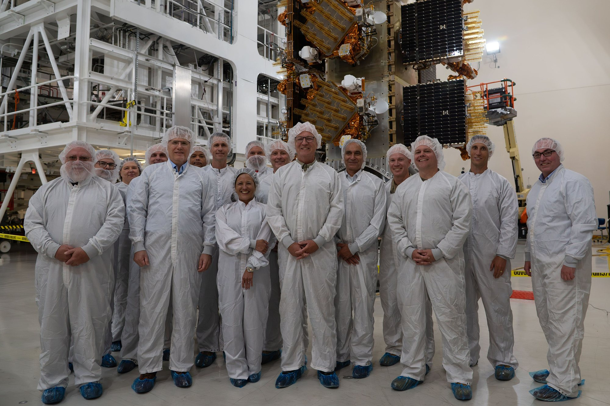
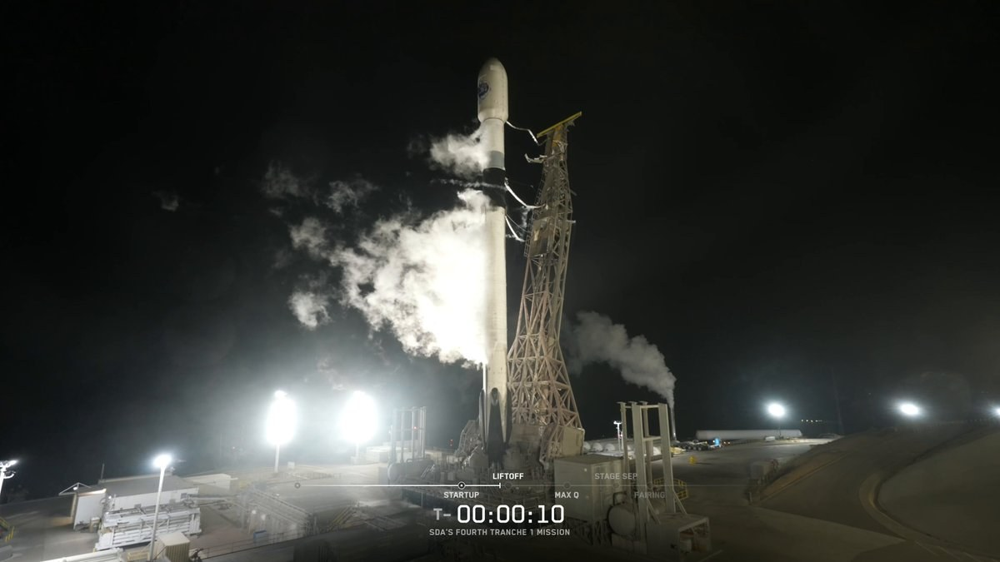

Alle 07:39 UTC di sabato 10 ottobre 2026, le 00:39 in California e le 09:39 in Italia, un Falcon 9 è decollato dallo Space Launch Complex 4E della base di Vandenberg con a bordo 21 satelliti per la Space Development Agency, l’agenzia della U.S. Space Force che sta costruendo una rete militare di centinaia di satelliti in orbita bassa. La missione si chiama Tranche 1 Transport Layer A, abbreviata in T1TL-A, ed è il quarto lancio di satelliti di produzione per questa architettura. Arriva dopo cinque giorni di attesa: il primo tentativo, lunedì 5 ottobre, si era fermato a meno di un minuto dal decollo.
Il lancio di stanotte
Il razzo ha lasciato la costa californiana puntando verso sud, la traiettoria tipica delle orbite polari che dalla base di Vandenberg si raggiungono senza sorvolare zone abitate. Le condizioni meteo erano indicate all’80 per cento favorevoli già un’ora prima del decollo, quando è cominciato il caricamento di propellente. Lo SLC-4E è oggi l’unica rampa di lancio di SpaceX sulla costa occidentale degli Stati Uniti, e da qui partono sia molti lanci Starlink sia le missioni governative destinate a orbite molto inclinate.
Il primo stadio, il booster B1103, era al sesto volo. Nelle missioni precedenti aveva portato in orbita il satellite di ricognizione NROL-179, la missione T1TL-E della stessa Space Development Agency a luglio e tre gruppi di satelliti Starlink. Il profilo prevedeva il ritorno alla Landing Zone 4, a poche centinaia di metri dalla rampa, meno di sette minuti e mezzo dopo il decollo: SpaceX ha confermato l’atterraggio. È il trentasettesimo atterraggio su questa piazzola e il seicentosessantottesimo di un booster Falcon. Il secondo stadio prosegue invece verso l’orbita di rilascio, dove i 21 satelliti vengono liberati in sequenza.
Cinque giorni di rinvii
Il primo tentativo risale a lunedì 5 ottobre. Il conto alla rovescia si è fermato a 58 secondi dal decollo con un arresto automatico, scattato pochi istanti dopo che i computer di bordo avevano preso il controllo della sequenza finale. SpaceX ha comunicato che razzo e carico erano in buone condizioni e che le squadre si preparavano a riprovare il giorno dopo. Il razzo però è stato riportato in posizione orizzontale sulla rampa, una scelta che di solito indica un controllo su qualche componente, e il lancio è slittato un giorno alla volta: il 6, poi l’8, poi non prima del 10 ottobre. Anche un test missilistico condotto venerdì dal poligono occidentale ha contribuito a fissare la nuova data al sabato. La causa dell’arresto non è stata resa pubblica.
Per una missione militare il ritardo di qualche giorno non cambia il quadro. Conta di più la cadenza complessiva della costellazione: i primi piani orbitali dovevano susseguirsi a ritmo quasi mensile, mentre fra il terzo lancio di luglio e questo sono passati quasi tre mesi.

Che cosa portava in orbita
I 21 satelliti di T1TL-A sono stati costruiti da Northrop Grumman e consegnati a Vandenberg il 28 settembre. Formano il quarto piano orbitale del Transport Layer, lo strato di trasporto dati della Proliferated Warfighter Space Architecture: un nome lungo per un’idea semplice, sostituire pochi grandi satelliti militari, costosi e vulnerabili, con molti satelliti più piccoli, prodotti in serie e collegati fra loro. Se uno viene perso o disturbato, la rete continua a funzionare attraverso gli altri.
Il cuore del sistema sono i collegamenti ottici fra satelliti. Invece dei classici ponti radio, i satelliti del Transport Layer si scambiano dati con fasci laser, che offrono più banda e sono più difficili da intercettare. L’orbita bassa riduce la distanza da terra e quindi i tempi di trasmissione, un aspetto che la SDA considera decisivo per colpire bersagli che si spostano rapidamente. La rete è pensata per dialogare con Link-16, il collegamento dati tattico usato da aerei, navi e forze di terra degli Stati Uniti e degli alleati, e con l’Integrated Broadcast System che distribuisce allarmi e informazioni sulla situazione operativa.
Il Transport Layer non lavora da solo. Accanto ai satelliti di trasporto la Tranche 1 comprende 28 satelliti del Tracking Layer, dotati di sensori infrarossi per individuare e seguire missili, e quattro satelliti dimostrativi per la difesa missilistica. A regime la rete di trasporto dovrebbe contare fra 300 e 500 satelliti, a quote fra 750 e 1.200 chilometri, con almeno due satelliti visibili in ogni momento dal 95 per cento della superficie terrestre.

A che punto è la Tranche 1
Prima di questo volo la SDA aveva già tre piani orbitali in orbita, per un totale di 63 satelliti. Il primo lancio, T1TL-B, è partito il 10 settembre 2025 con satelliti York Space Systems; il secondo, T1TL-C, il 15 ottobre 2025 con satelliti Lockheed Martin; il terzo, T1TL-E, il 16 luglio 2026, di nuovo con satelliti York. Se il rilascio di oggi va a buon fine i satelliti del Transport Layer salgono a 84, due terzi dei 126 previsti per questo strato. L’ordine alfabetico delle sigle non corrisponde all’ordine dei voli: la Space Force ha chiarito da tempo che i piani iniziali possono partire nella sequenza più comoda per la disponibilità dei satelliti.
La Tranche 1 deve fornire le prime capacità operative al Dipartimento della Difesa a partire dal 2027: canali di dati tattici con copertura regionale persistente, allarme e tracciamento di missili avanzati, puntamento oltre l’orizzonte e dimostrazioni di comunicazioni satellitari tattiche in banda UHF e S. Dopo arriveranno le tranche successive, ciascuna con satelliti più capaci, secondo un modello che l’agenzia chiama a spirale: un nuovo blocco circa ogni due anni, invece di un unico sistema progettato per durare decenni.
Il ruolo di SpaceX
Per SpaceX la missione è un pezzo del lavoro per la sicurezza nazionale americana che negli ultimi anni è diventato centrale quanto i lanci commerciali. T1TL-A rientra nel contratto National Security Space Launch Fase 2, assegnato nell’agosto 2020 e gestito dallo Space Systems Command della Space Force, ed è la quarta delle nove missioni Tranche 1 che Falcon 9 lancerà per la SDA. La stessa base di Vandenberg ospita anche i lanci per il National Reconnaissance Office, come la NROL-179 portata in orbita proprio dal booster di oggi.
C’è anche un aspetto industriale meno evidente. La rete della SDA nasce dalla stessa intuizione che ha reso possibile Starlink: satelliti prodotti in serie, lanciati a decine e sostituiti con regolarità, sono più resistenti di pochi satelliti unici. SpaceX in questo caso non costruisce i satelliti, ma il riuso dei booster e la cadenza di Falcon 9 rendono sostenibile un’architettura che richiede lanci frequenti. Senza un lanciatore riutilizzabile e disponibile con continuità, un modello basato su centinaia di satelliti rinnovati ogni pochi anni sarebbe molto più difficile da finanziare.
Il tema riguarda anche l’Europa. Link-16 è lo standard di collegamento dati tattico della NATO e lo usano anche le forze armate italiane: una rete in orbita bassa capace di distribuire dati in quel formato, oltre l’orizzonte e senza dipendere da stazioni a terra vicine al teatro operativo, cambia il modo in cui gli alleati possono condividere informazioni. Per ora la Tranche 1 è un programma statunitense e i dettagli sull’accesso dei partner non sono stati definiti pubblicamente. Resta il fatto che la costellazione cresce un piano orbitale alla volta, e ogni lancio riuscito avvicina la data del 2027 indicata per le prime capacità operative.
Che cosa aspettarsi adesso
Resta da confermare il rilascio di tutti i 21 satelliti, che di solito SpaceX annuncia sui propri canali circa un’ora dopo il decollo. Nelle settimane successive toccherà a Northrop Grumman e alla SDA verificare che i satelliti rispondano, alzino l’orbita fino alla quota operativa e attivino i collegamenti laser con quelli dei piani già in servizio.
Il calendario SpaceX resta fitto anche sulla costa orientale: martedì 13 ottobre, alle 12:33 italiane, è previsto il lancio della missione cargo CRS-35 verso la Stazione Spaziale Internazionale. Il dossier su Starlink Mobile e l’acquisto dello spettro a 800 MHz passa all’archivio Notizie: questa pagina mette in primo piano il quarto lancio della rete militare SDA.

Fonti pubbliche e tracce
Ultimo aggiornamento editoriale: 10 ottobre 2026. Nel corpo non si ripete la fonte a ogni frase: le tracce sono raccolte qui. Orari convertiti da UTC e PDT all’ora italiana (CEST, UTC+2). Atterraggio a LZ-4 confermato; rilascio dei satelliti ancora in attesa di conferma ufficiale.
- SpaceX su X, 10 ottobre 2026: conferma del decollo; atterraggio a LZ-4; post pre-lancio con meteo all’80 per cento favorevole e inizio del caricamento di propellente.
- SpaceX, pagina della missione SDA T1TL-A: orario, SLC-4E, sesto volo del booster, Landing Zone 4, quarta di nove missioni Tranche 1, 21 satelliti del quarto piano orbitale.
- Spaceflight Now, 9 ottobre 2026: arresto automatico a T-58 secondi del 5 ottobre, rinvii, booster B1103, statistiche di atterraggio, satelliti Northrop Grumman consegnati il 28 settembre, missioni precedenti, architettura PWSA, citazioni SDA.
- SpaceX su X, 8 ottobre 2026: nuova data non prima del 10 ottobre.
- Next Spaceflight, scheda T1TL-A: orario 07:39 UTC, orbita polare, costruttore e booster.
- Spaceflight Now su X, 8 ottobre 2026: CRS-35 il 13 ottobre alle 06:33 EDT (10:33 UTC).
- Dossier del sito: agenda dei lanci SpaceX.
Fotografie utilizzabili
Copertina e due figure del decollo e dell’atterraggio sono fotogrammi dai video ufficiali SpaceX del 10 ottobre 2026, usati con credito SpaceX e dicitura «uso editoriale non commerciale» (nessuna foto libera del volo era disponibile al momento della pubblicazione). La foto dei satelliti Tranche 1 in preparazione è U.S. Air Force / Wikimedia Commons in pubblico dominio ed è d’archivio della serie (non ritrae i satelliti Northrop Grumman di oggi). Dettagli in assets_sda_t1tla/crediti_immagini.md.
Apri il dossier Starlink Mobile archiviato · Archivio Notizie · Torna a SpaceX